DSDP - A Blind Docking Strategy Accelerated by GPUs
DSDP: A Blind Docking Strategy Accelerated by GPUs
[Abstract]
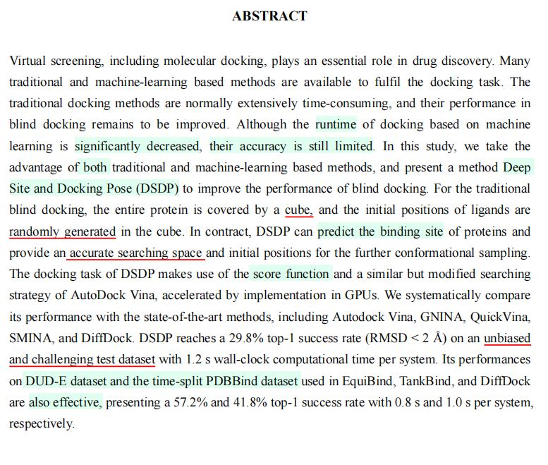
1.【论文观点】基于机器学习的对接方法虽然大幅度减少运行时间，但是精度仍然有限。
2.【数据集】本文使用一个无偏的、具有挑战性的新颖测试集。
[1 Introduction]
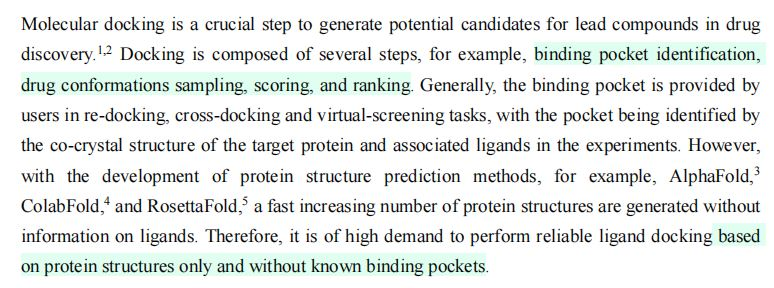
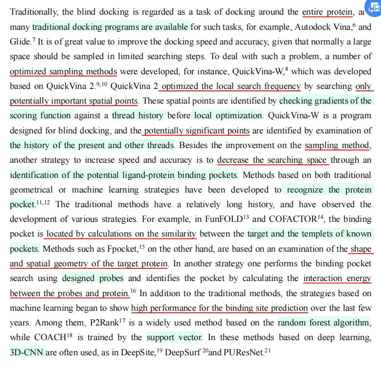
1.采样方法及其优化
（1）传统对接任务：针对一整个蛋白质进行采样。
（2）\(QuickVina \space 2\)：只针对潜在重要的空间点进行搜索。
·优化方法：在进行局部优化前，检查评分函数的梯度。
·优化目的：降低局部搜索频率。
2.缩小搜索空间——识别分子对接口袋
（1）FunFOLD, COFACTOR：计算目标口袋、已知模板口袋之间的相似度。
（2）使用设计好的探针进行口袋搜索，根据探针和蛋白质的相互作用能量识别口袋。
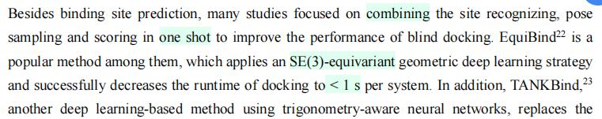
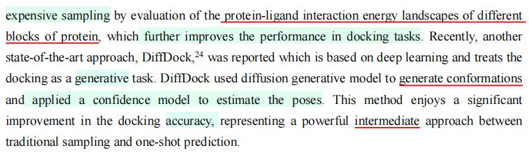
3.端到端的机器学习方法
·TANKBind：蛋白质分块，评估蛋白质与配体的相互作用能量。
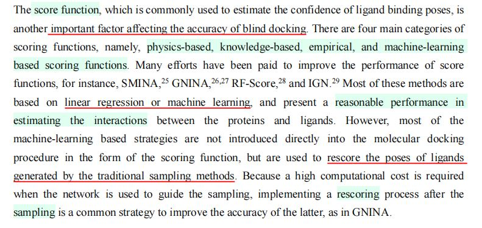
4.评分函数
（1）基于知识
（2）基于物理
（3）经验主义
（4）基于机器学习
（5）常用评分函数的作用：针对采样获得的对接姿态进行重新评分、排名。
5.\(DSDP\)简述
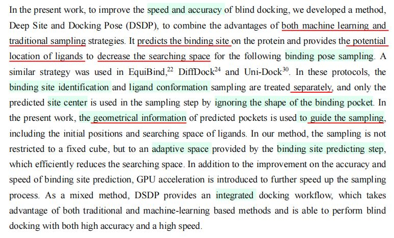
（1）首先预测对接位点，提供配体的潜在位置，以减小搜索空间。
（2）使用几何信息引导采样。
（3）具有适应性的搜索空间。
[2 Methods]
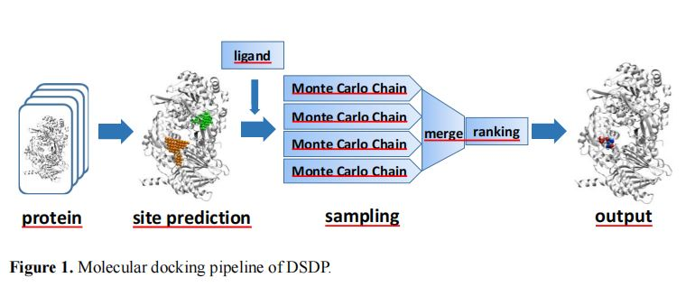
1.对接口袋预测
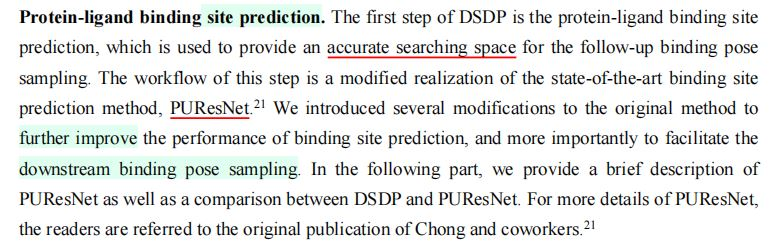
（1）实现方法：对\(PUResnet\)模型作一些修改后，调用模型进行预测。
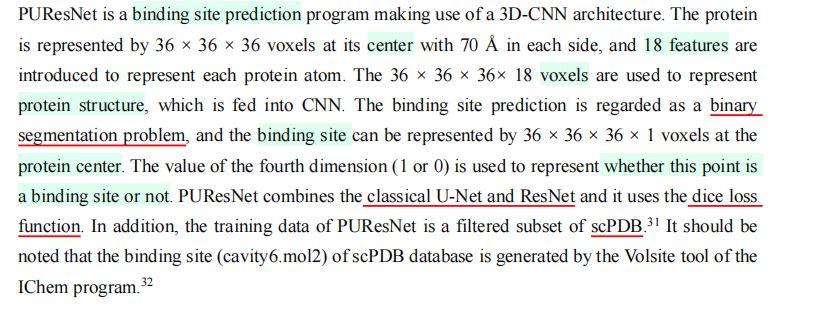
（2）\(PUResnet\)方法简介
·网络结构：\(3D\)-\(CNN\).
·蛋白质结构表示：\(36\times 36\times 36 \times 18\)个体素。
·对接口袋预测：二进制切割问题。
·网络结构：联合使用\(U\)-\(Net\)和\(ResNet\)。
·损失函数：\(Dice\)损失函数。
·训练集：\(scPDB\)的一个经过过滤的子集。
3.对比——\(DSDP\)和\(PUResnet\)
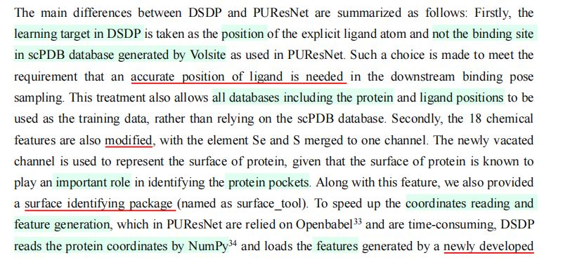
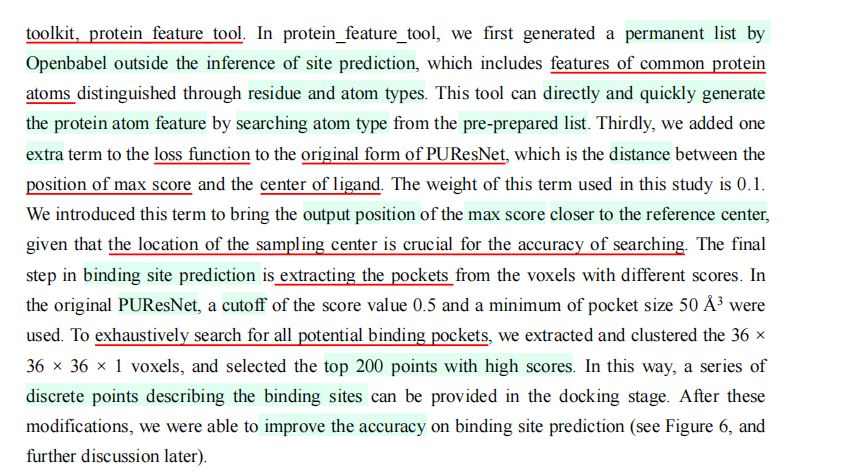
（1）学习目标
·\(DSDP\)：配体原子的精确位置。
·\(PUResNet\)：由\(Volsite\)生成的对接口袋。
·原因一：配体原子的精确位置，需要在下游对接姿态采样任务中使用。
·原因二：训练集可以拓展到所有的蛋白质和配体位置，而非受限于\(scPDB\)数据集本身。
（2）化学特征的修改
·\(DSDP\)：将\(Se\)和\(S\)原子归并到一个频道。
·\(DSDP\)：新的频道用于表示蛋白质表面。
（3）\(DSDP\)新增：表面识别工具
（4）坐标读取、特征生成加速
·使用\(Numpy\)读取蛋白质坐标。
·使用\(protein\)-\(feature\)-\(tool\)加速特征生成
（5）新增：损失函数项
·\(DSDP\)：新增了最高分数对应中心与实际配体中心的距离。
·目的：使得输出位置更接近口袋中心。
（6）针对各个体素评分并提取对接口袋
·对体素进行提取、聚类。
·选择分数最高的\(200\)个体素。
·预测表示对接口袋的离散点。
2.基于传统方法的对接姿态搜索
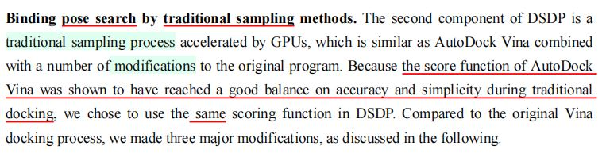
（1）评分函数
·采用\(AutoDock \space Vina\)的评分函数，因其能在精确度和简单程度之间取得平衡。
【思考】\(simplicity\)可能是传统方法为了提高速度而不得不考虑的一个限制，对于更加快速的深度学习方法，可能基于\(Diffusion\)的评分函数更占优势。
（2）基于网格的能量评估方法
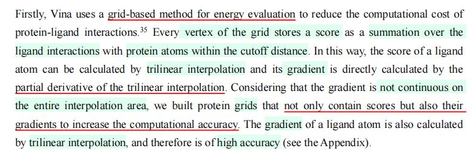
·每个格点存储的内容：在限定距离内，配体跟蛋白质原子的相互作用情况。
·配体原子的评分：根据格点评分进行三线性插值计算得出。
·插值区域内梯度非连续性的解决方法：建立蛋白质网格时，不仅包含分数，也包含分数的梯度，以增加计算精确度。
·原子梯度的计算：利用格点梯度，进行三线性插值，作为原子梯度的近似值。
（3）采样所得构象的局部优化
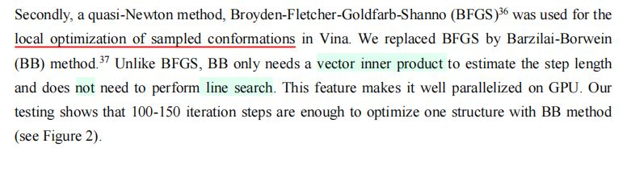
·\(Vina\)方法：\(BFGS\).
·本文：使用\(BB\)方法。
·优点：只需向量内积以估计步长，无需进行线性搜索，时间复杂度降低。
（4）\(Vina\)——搜索空间与配体初始位置
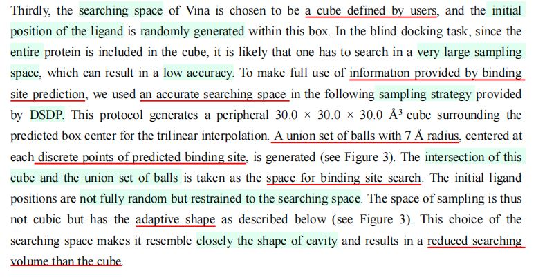
·搜索空间：由用户确定的立方体。
·配体初始位置：在立方体中随机生成。
·问题：采样空间巨大，导致效率低下。
（5）\(DSDP\)——搜索空间与配体初始位置
·利用口袋预测工具，围绕着预测得到的口袋中心，生成一个边长为\(30 \space A\)的立方体。
·根据预测得到的对接口袋离散点，生成一系列半径\(7 \space A\)的球体。
·搜索空间：球体先取并集，然后和立方体取交集，作为搜索空间。
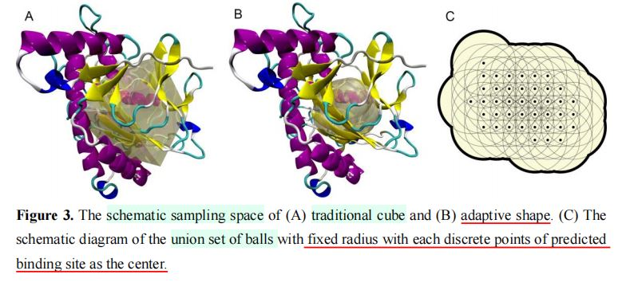
·搜索空间的好处：与空腔形状较为接近，搜索空间减小。
（6）\(GPU\)加速
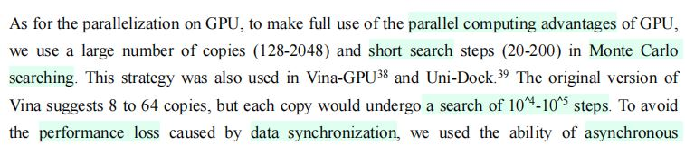
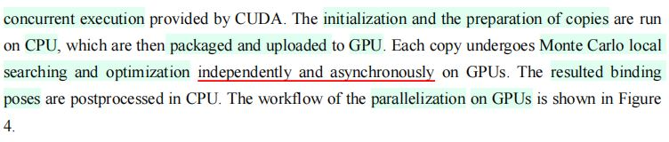
·减少蒙特卡洛法的搜索步数。
·使用\(CUDA\)提供的异步并行计算。
·\(GPU\)的工作：蒙特卡洛搜索与优化。
·工作流程
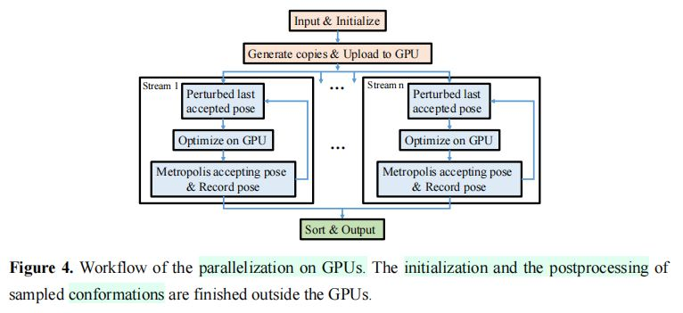
3.数据集
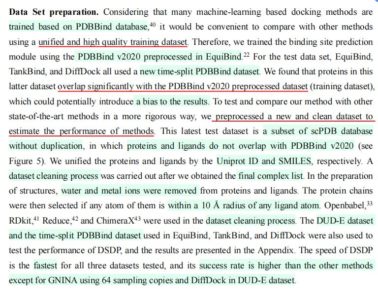
（1）训练集
使用\(Equibind\)预处理得到的\(PDBBind\)数据集。
（2）测试集——旧测试集的问题：\(EquiBind\), \(TankBind\)和\(DiffDock\)使用的都是基于时间分割的\(PDBBind\)数据集，该数据集跟\(PDBBind\)重叠程度很大，会给测试结果带来偏差。
（3）测试集——提出新的测试集(subset of scPDB)
·从\(scPDB\)数据库中挖掘一个子集，该子集中的数据跟\(PDBBind \space v2020\)没有交集。
（4）新测试集的数据处理工作
·去除水分子、金属离子。
·选择位于配体原子\(10 A\)以内的蛋白质链条。
·使用\(OpenBabel, RDkid, Reduce, ChimeraX\)进行数据清理。
（5）对于旧测试集的保留
保留了基于时间分割的\(PDBBind\)测试集，以及\(DUD-E\)数据集。
4.\(Baseline\)设定
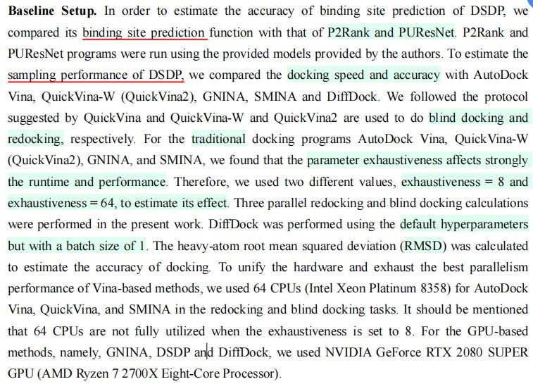
[3 Results and Discussion]
1.蛋白质口袋预测
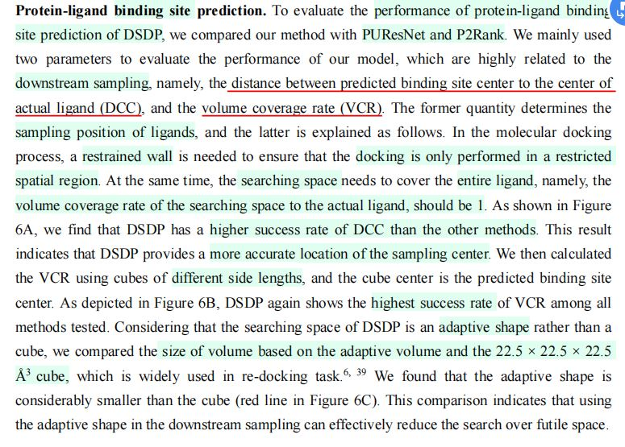
（1）比较对象：\(PUResNet, P2Rank\).
（2）衡量标准
·\(DCC\)：预测的口袋中心与真实的配体中心之间的距离。
·\(VCR\)：配体实际位置的受覆盖程度。
（3）实验结果：
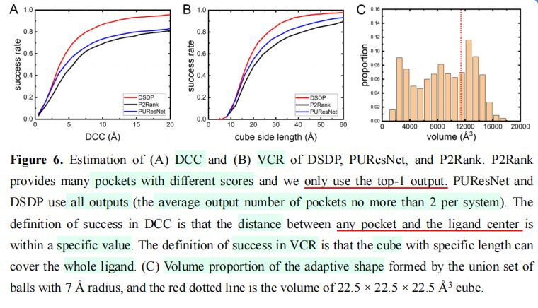
对于\(DCC\)和\(VCR\)，\(DSDP\)的表现均胜过旧有方法。
2.重对接任务
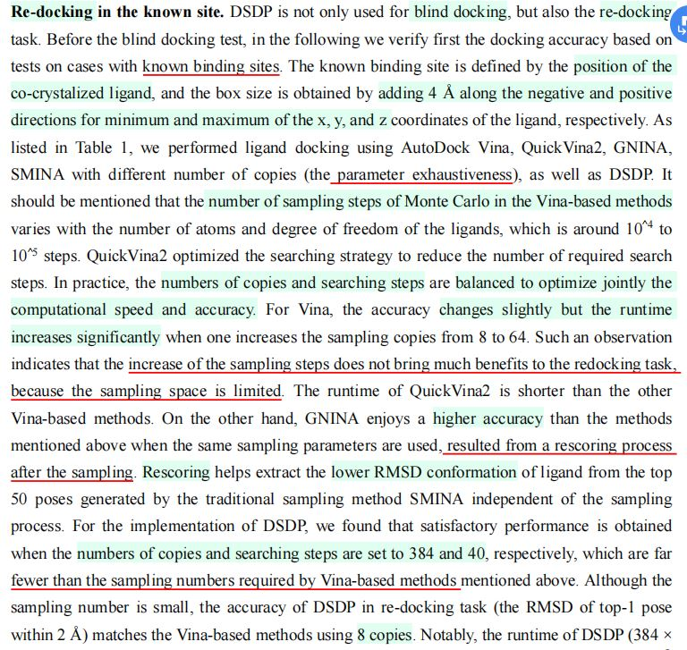
（1）有关\(Vina\)的实验结论
·采样备份从8份增加到64份后，精确度只有细微变化。
·原因：采样空间受限，采样步数对重对接结果影响不大。
（2）\(GNINA\)获得更高精确度的原因：在采样后添加了重新评分的过程。
（3）重对接任务实验结果
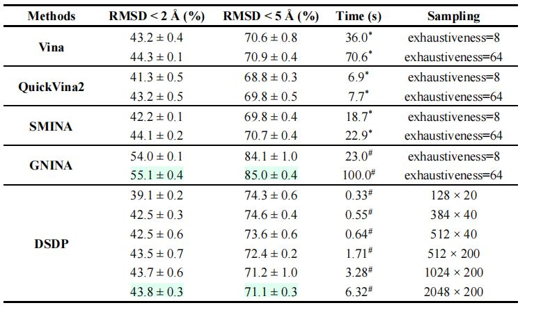
3.盲对接任务
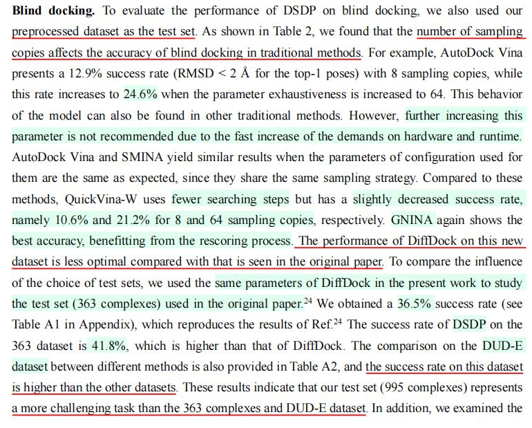
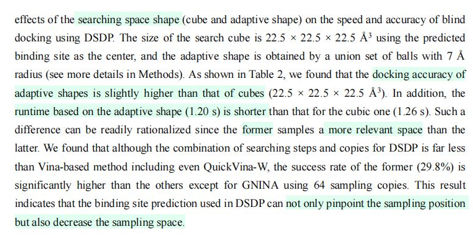
（1）传统方法：采样备份数大幅度影响盲对接精确度。
（2）\(DiffDock\)在新数据集上的表现，弱于在\(PDBBind\)测试集以及\(DUD-E\)测试集上的表现。
（3）从\(scPDB\)挖掘的新测试集：比原有的测试集更有挑战性。
（4）盲对接任务实验结果
·新测试集
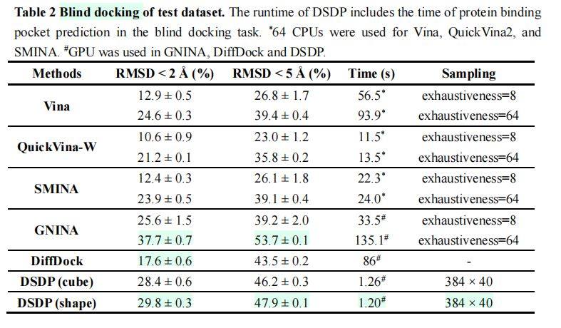
·时间分割的\(PDBBind\)测试集
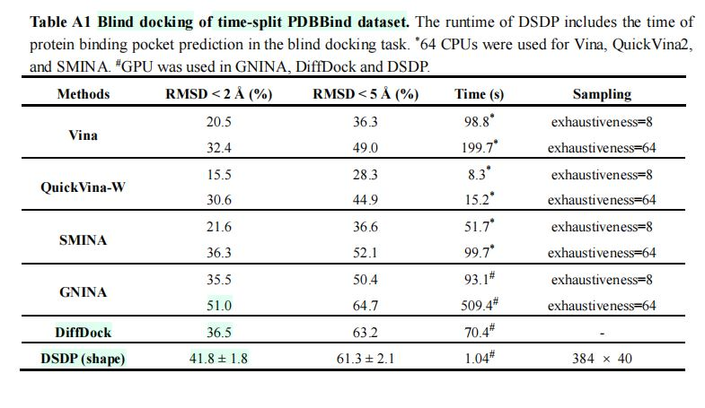
·\(DUD-E\)测试集（成功率普遍偏高，作用甚至不如\(PDBBind\)）
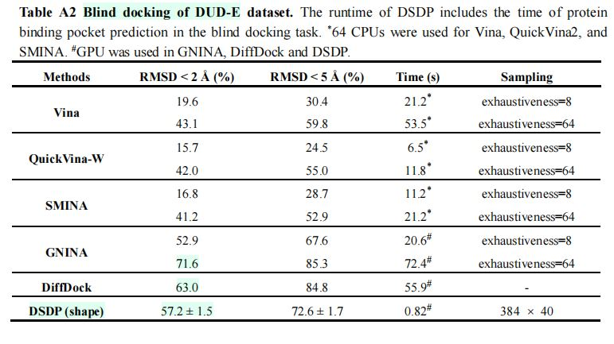
[4 Conclusion]
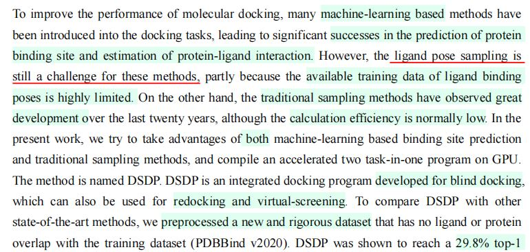
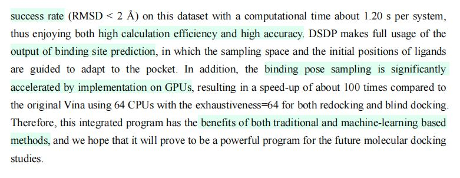